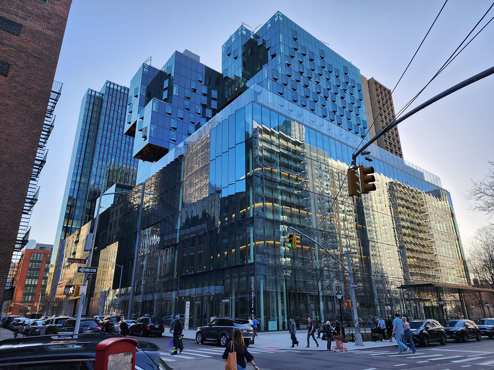

NYU Community
Paulson Center
새로운 멀티 복합 공간을 갖춘 기숙사

특징
📍 181 Mercer Street에 위치
🛏️ 싱글, 더블, 트리플 포함 다양한 스위트 타입
🏫 기숙사는 7층~16층, 수업 공간은 2층~5층
💪 헬스장, 농구장, 수영장, 카페, 식당 보유
✅ 장점: 새 건물, 편의 시설 다양, 학교 건물과 가까움
⚠️ 단점: 지원 시 에세이 작성 필요, 경쟁률 높음
👍
← 메인으로 돌아가기